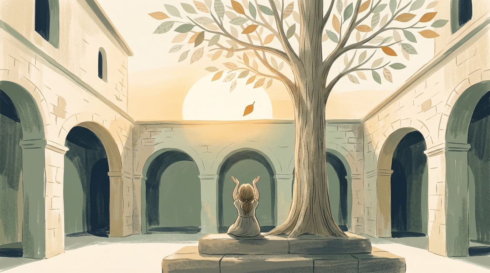

At the heart of the orchard stood the first tree, taller now than the courtyard wall. Its highest leaf, the one she had never been able to reach, finally drifted down into her hands.
It was in her grandmother's handwriting. It said the thing her grandmother had never managed to say aloud: that she was proud of her, and that she was sorry she had not said it sooner.

Lina sat with the leaf for a long time. Then she took a sheet of paper, folded it carefully into a seed, and wrote a name on an envelope in green ink.